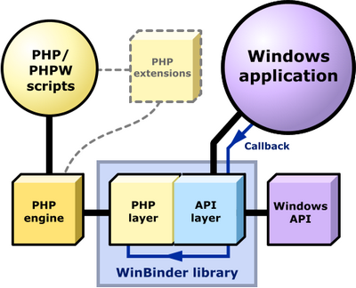

WinBinder takes advantage of the relatively new CLI SAPI (Command Line Interface / Server Application Programming Interface) that was officially introduced in PHP 4.3.0. A custom-made DLL (a Windows library) extends PHP so it is possible to use the language to build a Windows development platform. The library includes code to manage windows, controls, messages, timers, the registry, GDI (Windows' Graphics Device Interface) and more. A set of low-level functions allows the programmer to access any Windows function, declare structures and access memory directly.
Controls can be created directly by calling WinBinder functions or via RC files generated from a third-party form editor. These resource files can be parsed in real time, avoiding the need for a separate compilation step.
The diagram below is a graphical representation of the mechanism used by WinBinder to generate a Windows application.

A callback mechanism allows the application script to easily process
Windows messages generated by controls
and timers, which are translated to simple callback events that can be handled
easily by the PHP code using a single switch statement. Optional
filters provide additional features like mouse and keyboard message processing.
WinBinder is actually the juxtaposition of two different layers of code. The lower-level layer (called the API layer), is directly connected to the Windows API and provides a uniform interface to the higher-level layer (the PHP layer). Most functions in the lower-level layer are more than simple wrappers around the API functions, though; they also greatly simplify the access to many of the often obscure Windows functions and messages.
For example, Windows uses different messages to set numeric values for scroll bars, track bars, progress bars and up/down controls. Furthermore, in spite of the evident similarities between these controls, the message arguments have different meanings, order and types as shown below:
|
Scroll bars |
|
|
Track bars |
|
|
Progress bars |
|
|
Up/down controls |
|
One of the goals of WinBinder is to isolate the programmer from these complexities
much in the same way that a class library works (although WinBinder does
not use classes). The API layer accomplishes this by declaring a single public function, wbSetValue(),
that
has a uniform interface for all control classes. Incidentally, this function is extended to perform similar
actions in other control
classes like combo boxes, list boxes, buttons and menu items, obviating the
need of more specific functions like wbSelect() and wbCheck(),
for instance.
The second layer (the PHP layer) is what effectively
binds the lower-level layer to PHP/Zend engine, creating a new set of PHP user-level
functions. Many such functions have a one-to-one correspondence with the API layer
— wb_set_value() in the example above — although this
is not a requirement.
The net effect using a two-layer model is the creation of a much simplified
interface to the Windows
API due to the heavy abstraction that results from this approach. For example, to assign an icon
to an application window, the programmer calls the wb_set_image() function and passes a
window handle and the icon file name to it. If an index is added, a DLL or executable
may be used as the icon resource. The same function is also used to assign
a bitmap to a static control, an image list to a treeview or listview, and so on. Thus the most intimidating aspects of the Windows API, with its
myriad of functions and messages, are hidden from the high-level
programmer.
Another key benefit of this approach is the potential to create bindings for other script languages by replacing the PHP layer with something else. (A Lua binding comes to mind.) The API layer also has the potential to be embedded in an application or used as a standalone DLL, although nobody seems to have attempted this yet. In this case, WinBinder would act as a very lightweight framework between the application (probably coded in C or C++) and Windows.
Replacing the Windows API layer with some other OS, although possible in theory, seems to be overly complex and is not among the goals of this project.
What is WinBinder?
Creating WinBinder applications